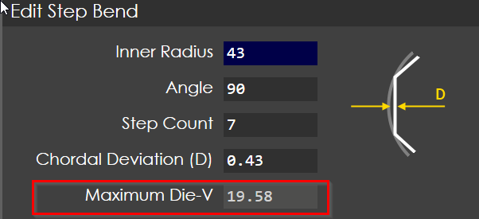

Large radius bendig
Bump bending is a method used to form a series of small bends or "bumps" in a material (usually metal) at regular intervals. Unlike traditional bending, which creates a single, smooth curve or angle, bump bending creates a series of small incremental bends, often in the form of "steps" or "bumps" along the material.
|
Note
|
In order to achieve a constant curvature the bend angles are not even distributed along the length of the material. An example of a 90 degree bend with 7 sub steps his shown below |

RightAngel control will automatically calculate for you the optimal sequence of bends. See Create a large radius bend for more information.
Select the optimal die
In the calculation proocess you could influence the bending by the following parameters:

The Chordal Deviation (D): controls the error allowed for the bend approximation. Since a lot of very shallow bends are created the die geometry is crucial.
|
Important
|
It is important not to exceed the Maximum Die-V with your tool selection. |
The Die with in the following part settings dialog reflects the standard tool for a certain material thickness. It is not specific for the large radius bending and will be changed in the auto tooling step.
|
Important
|
Don’t lock the Maximum Die-V with a value higher than allowed, it will create a inaccurate result |
Adjust large bending
Center angle correction
In order to adjust the large bending, you need to follow these steps:
-
Select correction page
-
Select bend 1
-
Input the measured value (e.g. 100deg). RA will automatically distribute the corrections on each sub bend. The calculated correction be distributed into each sub-angle will be like below:
Bend 1: -1.42 Bend 2 ~ Bend 6: -3.17 Bend 7: -1.42
WARNING : The system changed now all bends. Don’t do an additional corrections in any sub bends.
|
Tip
|
If you want to adjust the large bending after bending another test part again you need to go to bend 1 and process above. |
Direct corrections
You could also directly input correction values for Y1 and Y2. The value will be added on each bend.
Example: If you have 5 Substeps and add 2 degree correction you have an overall correction of 10 degrees. The value will be automatically added to each bend step.